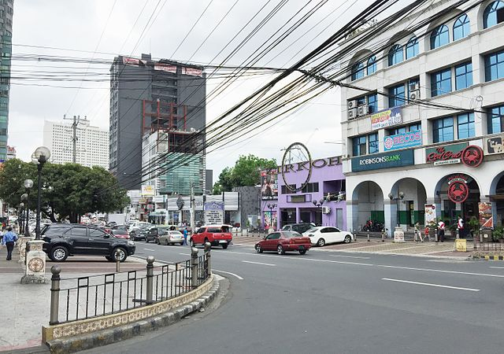
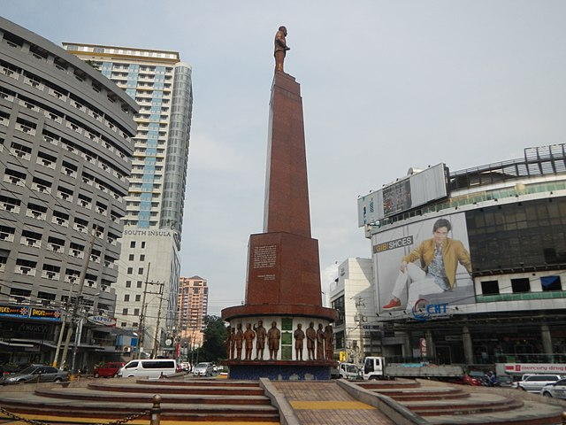

Tomas Morato Avenue
South Triangle, Quezon City, Philippines

South Triangle, Quezon City, Philippines
The street is known as a trendy restaurant row located in Quezon City's entertainment area along with Timog Avenue and West Avenue. It is also known for its bars, discos, karaoke and comedy clubs, and as a popular hangout for local actors who work in the nearby studios such as the ABS-CBN Broadcasting Center on Mother Ignacia Avenue and GMA Network Center on Timog Avenue, as well as millennials.
The street, which opened around 1940, was originally named Sampaloc Avenue. It was so named because of the prevalence of tamarind trees which lined the street in the early days. It is believed that the trees were planted by Tomas Morato himself along with former president Manuel Luis Quezon and journalist Alejandro Roces. As of 2012, however, only two sampaloc trees remain, as they have been cut down over the years to make way for parking spaces.
A memorial stands in the center of the rotunda at the intersection of Tomas Morato with Timog Avenue. Near the Scouting memorial is the location of the former Ozone disco.
Teeming with bars, restaurants, and other commercial spaces, Tomas Morato is a street that never sleeps, catering to the needs of workers who run the media companies located near it 24-7.
Some of the current favorites include Gogi Gogi, Stoned Steaks, Limbaga 77, and La Spezia, while old-timers like Romulo Café still get some love from followers.
Gora 2020. All rights reserved